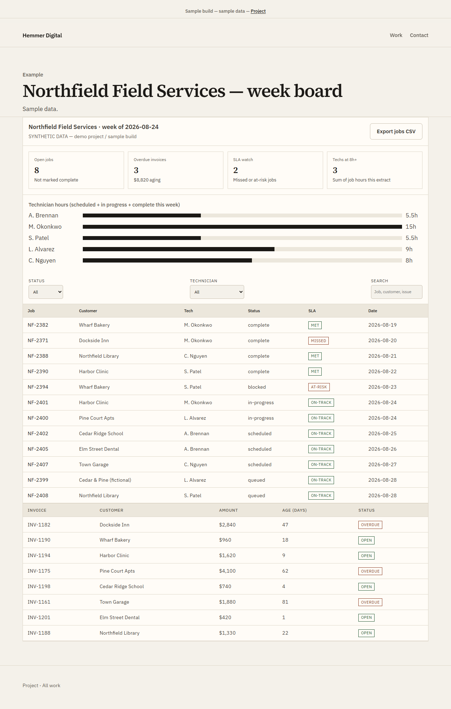

Internal tool
Operations board
Open jobs, who is busy, and which invoices are aging — on one screen.
What it is
A sample operations board for a small field crew (Northfield Field Services — fictional).

Internal tool
Open jobs, who is busy, and which invoices are aging — on one screen.
A sample operations board for a small field crew (Northfield Field Services — fictional).
